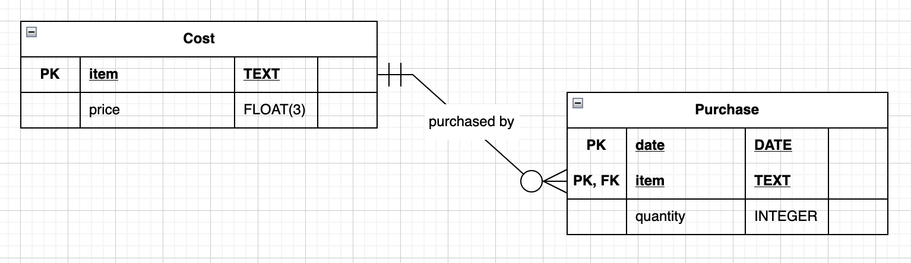

CIS 112, Dr. Ladd
creates rules for defining and manipulating databases.
but it’s not the same as Postgres.
Postgres is the program, SQL is the language.
| date | item | price | quantity |
|---|---|---|---|
| 8-11-2023 | Apple | $3.99 | 2 |
| 8-14-2023 | CokeZero | $4.99 | 3 |
| 8-14-2023 | Apple | $3.99 | 5 |

Always use quotes for attributes and names!
search_path.You should do this at the beginning of every SQL script in NotePad++.
(Save files with .sql extension.)
Make sure you include data types, constraints, and primary keys.
DROP TABLE removes the table and the CASCADE argument removes objects that depend on the table.
Use the Postgres Documentation for a complete guide.
You’ve already done this with PRIMARY KEY and NOT NULL!
or
This will only work if the other columns can be NULL!
Enter the command for inserting data into the purchase table.
HINT: You may need to look at the Postgres documentation for data types.
We’ll learn a lot more about SELECT later on…
DELETE FROM "purchase"; will delete
ALL the data without warning.Delete CokeZero from the cost table.